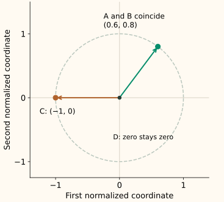

Max-Abs and Unit-Norm Scaling
Max-abs scaling works down columns. Unit-norm normalization works across rows. They answer different questions even though both involve division and both can preserve sparse zeros.
Max-abs scaling asks, “How large is this feature value relative to that feature’s training maximum magnitude?” L2 row normalization asks, “Which direction does this example point, after removing its overall length?”
See the axis of the calculation
Use four rows with two numerical features: A = [3, 4], B = [6, 8], C = [−3, 0], and D = [0, 0]. Across the training columns, the largest absolute values are 6 and 8.
For L2 normalization, A’s own length is the square root of 3² + 4², which is 5. B’s length is 10. Dividing each row by its own length maps both to [0.6, 0.8].
| Row | Input | Divide by | Output |
|---|---|---|---|
| A | [3, 4] | [6, 8] | [0.50, 0.50] |
| B | [6, 8] | [6, 8] | [1.00, 1.00] |
| C | [−3, 0] | [6, 8] | [−0.50, 0.00] |
| D | [0, 0] | [6, 8] | [0.00, 0.00] |
Max-abs preserves zero and learns a per-feature scale
For feature column $j$, let $a_j$ be its largest absolute value in the training pool. For a nonzero $a_j$, the transformed value in row $i$ is
There is no subtraction. Zero stays zero, and a negative input stays negative. Training values lie in [−1, 1], with at least one magnitude reaching 1 in each nonzero training column. A column need not attain both −1 and +1.
Future values reuse the saved divisors. The new row [12, 16] becomes [2, 2] under the example’s scales. Default max-abs scaling therefore does not guarantee bounded future inputs. Current scikit-learn also provides optional clipping; the clipping discussion explains why enforcing bounds loses information.
If a training column is entirely zero, scikit-learn uses a divisor of 1. Nonzero future values in that column remain nonzero, despite there being no observed training magnitude for comparison. Like any extrema-based scale, max-abs can be strongly affected by an extreme reference value.
L2 normalization preserves a nonzero row’s direction
Write $x_i$ for one whole row and $x_{ij}$ for one of its coordinates. Its L2 norm is its Euclidean length. For a nonzero row, normalize as
Every nonzero output row has length 1, apart from numerical precision. A and B lie along the same ray before normalization, so they reach the same point on the unit circle:

A zero row has no direction and cannot be divided by a positive length. Scikit-learn leaves it zero. It is not a unit vector, and a meaningful cosine comparison needs a separate policy for such inputs.
Decide whether magnitude is signal or nuisance
For a document vector, direction may capture word composition while length partly reflects document size. Row normalization can then be useful. If vector magnitude carries evidence—such as total activity, confidence, or exposure—removing it may discard useful information. Retain a separate magnitude feature when that is justified.
For two nonzero L2-normalized vectors, their dot product equals cosine similarity because both lengths are 1. Column scaling can change those directions before normalization; it is not the same operation as multiplying an entire row by one positive number.
L1, L2, and max row norms
For row [3, 4], L1 normalization divides by |3| + |4| = 7, L2 divides by 5, and max normalization divides by max(|3|, |4|) = 4. The results are [3/7, 4/7], [0.6, 0.8], and [0.75, 1]. Each has unit length under its chosen norm.
Normalizer(norm="max") still works across each row. It is not MaxAbsScaler, whose divisors are learned down training columns. L1-normalized nonnegative rows sum to 1; signed rows have absolute values summing to 1 and are not probability vectors.
Python: a fitted column scaler and a stateless row transform
MaxAbsScaler.fit learns the column maxima. Normalizer does not learn reference statistics: each transformed row supplies its own norm. Its fit interface validates configuration rather than learning a denominator to reuse.
Run both operations on the same matrix
import numpy as np
from sklearn.preprocessing import MaxAbsScaler, Normalizer
train = np.array([[3., 4.], [6., 8.], [-3., 0.], [0., 0.]])
columns = MaxAbsScaler().fit(train)
rows = Normalizer(norm="l2")
print(columns.scale_.tolist())
print(columns.transform(train).round(3).tolist())
print(rows.fit_transform(train).round(3).tolist())
assert columns.transform([[12., 16.]]).tolist() == [[2., 2.]]
assert np.allclose(columns.inverse_transform(columns.transform(train)), train)
[6.0, 8.0]
[[0.5, 0.5], [1.0, 1.0], [-0.5, 0.0], [0.0, 0.0]]
[[0.6, 0.8], [0.6, 0.8], [-1.0, 0.0], [0.0, 0.0]]The unclipped column transform can be inverted using its saved scales. L2 row normalization cannot recover the original length unless you saved each row’s norm separately.
The order of operations matters
Using the example’s saved column divisors, max-abs then L2 maps A first to [0.5, 0.5], then approximately [0.707, 0.707]. L2 alone gives [0.6, 0.8]. Column scaling changed which direction was kept.
If you normalize first and then apply those same column divisors, [0.6, 0.8] becomes [0.1, 0.1], whose L2 norm is not 1. Define the full pipeline order and test its intended invariant.
Sparse-friendly does not mean fit-free
Both operations can preserve zero entries because they use multiplication or division without adding a nonzero offset. Appropriate sparse implementations avoid materializing the zeros. The sparse-scaling chapter follows the storage in detail.
Max-abs scales still belong to the training fold and the saved model. Row normalization is stateless, but any preceding vocabulary, feature weighting, or column scaling may be fitted and must respect that boundary. Handle missing inputs before a row norm if the transformer requires finite values.
C++: keep the two axes visible in the code
This two-feature example fits one pair of column scales and computes a fresh L2 length for every row. The zero-column and zero-row policies are explicit. It assumes finite inputs; a real sparse implementation should operate on stored values rather than allocate a dense matrix.
Compile the column and row operations
#include <algorithm>
#include <array>
#include <cmath>
#include <iomanip>
#include <iostream>
#include <stdexcept>
#include <vector>
using Row = std::array<double, 2>;
Row fit_max_abs(const std::vector<Row>& reference) {
if (reference.empty()) throw std::invalid_argument("empty reference");
Row scale{0, 0};
for (const auto& row : reference)
for (std::size_t j = 0; j < 2; ++j) {
if (!std::isfinite(row[j])) throw std::invalid_argument("finite values required");
scale[j] = std::max(scale[j], std::abs(row[j]));
}
for (double& s : scale) if (s == 0) s = 1;
return scale;
}
Row scale_columns(const Row& row, const Row& scale) {
return {row[0] / scale[0], row[1] / scale[1]};
}
Row normalize_row(const Row& row) {
const double length = std::hypot(row[0], row[1]);
if (length == 0) return row;
return {row[0] / length, row[1] / length};
}
int main() {
const std::vector<Row> data = {{3,4},{6,8},{-3,0},{0,0}};
const Row scale = fit_max_abs(data);
std::cout << std::fixed << std::setprecision(3);
for (std::size_t i = 0; i < data.size(); ++i) {
const Row a = scale_columns(data[i], scale), b = normalize_row(data[i]);
std::cout << "row " << i + 1 << ": maxabs " << a[0] << " " << a[1]
<< "; l2 " << b[0] << " " << b[1] << "\n";
}
}
row 1: maxabs 0.500 0.500; l2 0.600 0.800
row 2: maxabs 1.000 1.000; l2 0.600 0.800
row 3: maxabs -0.500 0.000; l2 -1.000 0.000
row 4: maxabs 0.000 0.000; l2 0.000 0.000References and further reading
- Scikit-learn: MaxAbsScaler — training column maxima, sparse support, future inputs, and clipping.
- Scikit-learn: Normalizer — independent row normalization and the available norm choices.
- Scikit-learn: cosine similarity — the normalized dot-product definition and its relation to unit-length vectors.